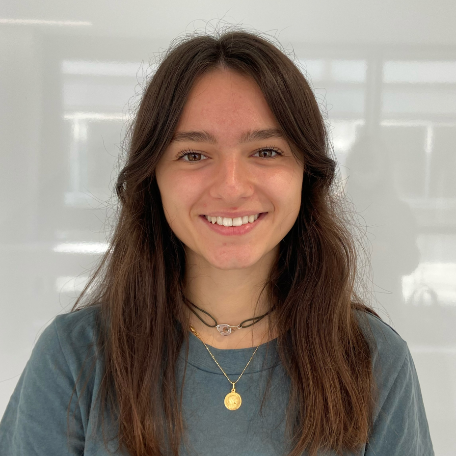

Bonjour, je me nomme Constance 😎

Je suis étudiante en première année à l'IESEG.
Formation :
- 2021-2026 : Formation en Programme Grande Ecole à l'IESEG, Lille
- 2021 : bac général avec mention, spécialités sciences économiques et sociales et
géopolitique, maths complémentaire
- 2017 : Formation classe santé : Obtention du certificat de compétences de citoyen de
sécurité civile (PSC 1).
Expériences personelles
-
Mars 2019 : stage chez BBG market à Capinghem : Conseils clients, rangements, facing, caisse, mise en rayon
-
Juin 2017 : stage • BBG market • Marquette-Lez-Lille, ouverture d’un magasin, facing, mise en
rayon, conseil client
Centres d'intérêt
- Planche à voile⛵, tennis🎾, volley🏐, course à pied 🏃🏻, équitation 🏇 depuis 10 ans, acquisition d’un équidé
(2012) : autonomie et rigueur
- Membre de l’équipe d’handball de l’IESEG
- Musique : 5 années de solfège, 4 années de clarinette, 11 ans de piano.
Compétences
-
Anglais : niveau B2
-
Espagnol : niveau A2
-
Informatique : Maîtrise du Pack Office (Excel, World, Powerpoint, Pages), Internet, réseaux sociaux.
-
Certifications : Voltaire et PIX